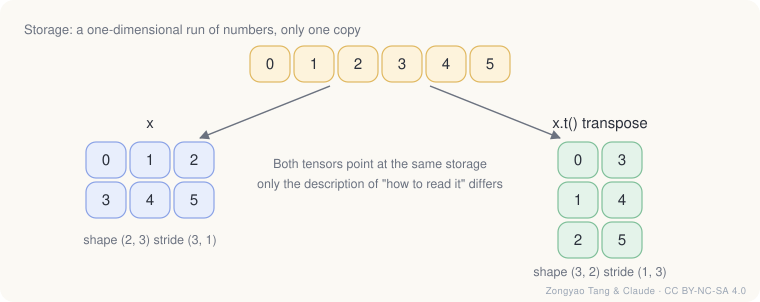
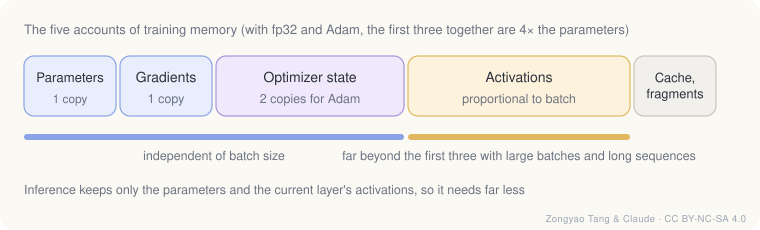

The thread: a tensor is really two things, a storage and a description → many operations change only the description, so they copy no data → the description also has three attributes that decide which implementation an operator takes → where does the storage come from? On the GPU, PyTorch has its own way of allocating it → finally, training memory split into five items. This unit also comes with "background for reading the source", the basis for every source walkthrough later.
Part 2 · The PyTorch execution stack2.1 Tensors and memory
Translated by AI (Anthropic's Claude) from the Chinese edition. The Chinese original is the reference.
This unit answersWhat exactly is a tensor in memory? Why do some operations copy data and others not?
The start of part 2. Follows the "framework layer" of 0.1: from here on, we look layer by layer at how PyTorch turns Python into computation on the GPU.
- A tensor = a piece of storage, plus a description of "how to read it"
- View, transpose and slicing change only the description, not the data
- The description has three more attributes, device, data type and layout, which decide an operator's implementation
- PyTorch caches GPU memory itself: reserved is what it got from the driver, allocated is what tensors actually use
- Training memory is five items: parameters, gradients, optimizer state, activations, cache and fragmentation
Explanation
1A tensor = a piece of storage, plus a description of "how to read it"
A tensor has two parts. The storage is a contiguous piece of memory holding numbers laid out in one dimension. The other part is metadata: shape, stride and starting offset, which say how to "read" those one-dimensional numbers as a multi-dimensional array.
Create a tensor with 2 rows and 3 columns:
x = torch.arange(6).reshape(2, 3) # [[0, 1, 2], # [3, 4, 5]]
The storage holds
0 1 2 3 4 5, in one dimension, with no notion of "rows" or "columns".The metadata has three items:
- Shape (size):
(2, 3). - Stride:
(3, 1). Meaning: add 1 to the row number and jump 3 places forward in the storage; add 1 to the column number and jump 1. - Offset (storage offset):
0. Which number in the storage to start from.
To find the element in row i, column j: position = offset + i × 3 + j × 1. For instance
x[1, 2]is at position 0 + 3 + 2 = 5, and its value is 5.You can look at this information directly:
x.shape, x.stride(), x.storage_offset() # (2, 3), (3, 1), 0
Why it is designed this way. Separating "where the numbers are" from "how to read them" brings two benefits:
- Several tensors can share one storage and simply read it differently (next card).
- The storage can live anywhere: main memory, GPU memory, even another device. The metadata always lives in main memory and is handled by code on the CPU. So querying or changing the shape of a tensor on the GPU never needs to involve the GPU.
In the source, the two parts are
TensorImpl(the metadata, plus a pointer to the storage) andStorageImpl(the piece of memory, and who allocated it, on which device). Behind atorch.Tensorobject in Python is oneTensorImpl.Background: what you need to recognise to read PyTorch's C++ source
If the C++ you learned is the older kind: PyTorch's source uses modern C++, but understanding the main lines only takes recognising the things below. Every source walkthrough later builds on this.
One: the repository's five directories.
torch/: Python code. The modules you use afterimport torch(torch.nn,torch.optim,torch.utils.data) are here, in plain Python.torch/csrc/: the interface layer between Python and C++, and framework logic written in C++. The autograd engine (autograd/) and distributed (distributed/) are here.aten/src/ATen/: the tensor library. All operator implementations are undernative/, with the CUDA versions innative/cuda/.c10/: the core at the very bottom.TensorImpl,StorageImpl, the infrastructure of the dispatcher, and the GPU memory allocator (c10/cuda/) are here.tools/: code-generation scripts, and the tables they read.
Two: much of the code is generated and cannot be found in the repository. PyTorch has over two thousand operators, and each one's Python interface, autograd wrapper and dispatch entry follow a fixed pattern. This repetitive code is not written by hand; scripts generate it at build time from two tables:
aten/src/ATen/native/native_functions.yaml: each operator's signature and which implementations it has (2.3).tools/autograd/derivatives.yaml: each operator's derivative formula (2.2).
So if searching the source for a function name finds nothing, it is most likely generated. Look in these two tables, or in the
generated/folder of the build directory.Three: smart pointers, or who frees the memory. The old way was to write
newanddeleteby hand. Today an object manages the pointer and frees it automatically when no one refers to it any more:std::shared_ptr<T>: a reference-counted pointer from the standard library.c10::intrusive_ptr<T>: PyTorch's own version, with the count stored inside the object. TheTensorclass actually holds just oneintrusive_ptr<TensorImpl>, so copying aTensoris cheap: the reference count goes up by one.std::unique_ptr<T>: an exclusive pointer that cannot be copied, only moved.
This explains one thing: when is a piece of GPU memory freed? When the last tensor pointing to it (views included, copies saved by autograd included) is gone.
Four: RAII and guards, using an object's lifetime to switch a state on and off. You will often see this in the source:
{ pybind11::gil_scoped_release no_gil; // releases the GIL when constructed ... compute ... } // takes the GIL back automatically on leaving the bracesObjects with
Guard,ScopeorModein their names are mostly used this way: change some state when constructed, restore it when destroyed.torch.no_grad()corresponds to a guard in C++. When you meet one, just ask: what does it switch on or off for the duration of this code?Five: templates and macros, first see what they expand into. You will meet long stretches of templates and macros, such as
TORCH_LIBRARY_IMPLfor registering operator implementations andTORCH_CHECKfor error checks. You do not need to understand how they are implemented, only what they do: the first fills in a cell of the dispatcher's table, the second throws an exception if its condition fails (the error messages you see in Python come from here, so searching the source for an error message often takes you straight to the spot).Six: a few namespaces.
c10::is the core,at::the tensor library (at::Tensor,at::add),torch::the upper layer,torch::autograd::automatic differentiation.at::add(a, b)is equivalent totorch.add(a, b)in Python.How to start reading. Not from the top. Take a specific question ("where does this error come from", "what does this argument actually affect"), search the repository for the error message or the argument name, and once you find one spot, follow the calls a few steps up or down. The walkthroughs later give routes of exactly this kind.
An analogyLike a reel of film and its projection notes: the film is a long strip of frames (the storage); the notes say "4 frames per row, 3 rows, start from frame 2" (the metadata). The same reel with different notes is a different picture.
So many operations that seem to "transform the data" really change only the description, without moving a single byte. Telling "change the description" from "move the data" is the first step to understanding PyTorch's performance and memory.
Used later in View, transpose and slicing change only the description, not the dataThe description has three more attributes, device, data type and layout, which decide an operator's implementationPyTorch caches GPU memory itself: reserved is what it got from the driver, allocated is what tensors actually useIn the forward pass, each operator records a "backward node" on the way, and the nodes form a graph- Shape (size):
- With storage and description separated, a whole class of operations that move no data follows at once.
2View, transpose and slicing change only the description, not the data
Slicing, transposing, reshape (in most cases) and expand produce new tensors that share the original's storage and differ only in shape, stride and offset. Such a tensor is called a view. Views take almost no time and no extra memory; but change the content of one and the other changes too.
Continue with the
xfrom the previous card (shape(2, 3), stride(3, 1)).Slicing:
x[1]takes the second row. The new tensor has shape(3,), stride(1,)and offset3. The storage is the same piece as before; reading just starts from the number at position 3.Transposing:
x.t()swaps rows and columns. The new tensor has shape(3, 2)and stride(1, 3): the original shape and stride, each in swapped order. Not a single number in the storage moved. Check: element[2, 1]of the new tensor is at position 2 × 1 + 1 × 3 = 5, value 5, exactly the originalx[1, 2].
Transposing just swaps the order of the shape and the stride; not one number in the storage moves What contiguous means. Read all of a tensor's elements in the order "the last dimension changes fastest"; if in the storage this also reads straight from front to back, the tensor is contiguous. The original
xis contiguous; after transposing, the logical order is 0 3 1 4 2 5, which jumps back and forth in the storage, so it is not contiguous.Not being contiguous has two consequences:
- Some operations require contiguity.
viewchanges only metadata; if the new shape cannot be expressed by changing strides alone, it raises an error and suggestsreshape. Whatreshapedoes: change only the metadata if it can; if it cannot, quietly make a copy. - Access patterns get worse. Computing on a non-contiguous tensor reads memory in jumps, which is unfriendly to caches (0.3); on a GPU, a kernel's memory accesses may then fail to coalesce (3.4). So some operations first call
.contiguous()internally to make a contiguous copy, and that copy is where the real time and memory go.
Which are views and which copy.
- Views: slicing and indexing (with integers or slices),
view,transpose/permute,expand,squeeze/unsqueeze,detach. - Copies:
clone,contiguous(when the original is not contiguous), indexing with a tensor or a boolean mask,.to()to change device or type, the results of most operations. - It depends:
reshape,flatten.
Views and memory. A view holds a reference to the whole storage. Slice a small piece off a 10 GB tensor and keep it, and those 10 GB can never be freed. To keep only the small piece,
clone()it and let go of the original tensor.An analogyLike two filtered views of the same spreadsheet: one by rows, one by columns, arranged differently, with the same data underneath. Change a cell in one view and it changes in the other.
So these operations are free, and you can use them without worry. Watch for two consequences: after transposing, data no longer sits "in order" in memory, and some operations become slower or fail; and a view can keep a large storage from being freed for a long time.
Builds on A tensor = a piece of storage, plus a description of "how to read it"The memory hierarchy: each level further away is one to three orders of magnitude slower- Some operations require contiguity.
- The metadata has a few more items that have nothing to do with "how to read the storage", but decide "who does the computing".
3The description has three more attributes, device, data type and layout, which decide an operator's implementation
Besides shape and stride, every tensor carries three attributes: device (the CPU, or which GPU), data type (fp32, bf16, int64…), and layout (an ordinary dense tensor, or a special format such as sparse). The same torch.add has different low-level implementations for different combinations of these three, and PyTorch picks one by the attributes of the input tensors.
Device. Where the storage is:
cpu, orcuda:0,cuda:1. It decides whether the implementation is CPU code or a CUDA kernel. Tensors taking part in one operation must be on the same device, or there is an error. PyTorch will not quietly move data for you, because copies across devices are expensive (step 3 in 0.1); it wants you to write them out explicitly.Data type (dtype). How many bytes each number takes and how to interpret them. It decides which kind of numeric operation the implementation uses. When two tensors of different types are added, PyTorch promotes the result to the "wider" type by fixed rules. What mixed-precision training (2.6) does is convert inputs to a lower-precision type temporarily, on the way into the operator call.
Layout. The vast majority of tensors are dense (strided): the "storage plus strides" of the previous two cards. Sparse tensors and other special formats store their data differently and have their own sets of implementations.
How they take part in routing. Each tensor also holds a "set of dispatch keys", determined by these three attributes plus states such as "requires grad". When an operator is called, PyTorch merges the sets of all input tensors, finds the item with the highest priority, and uses it to decide where the call goes next. Take a CUDA tensor that requires grad:
- First the "autograd" layer handles it, recording what the backward pass will need (2.2);
- Then the "CUDA backend" layer, which does the actual computation.
2.3 goes into this process. For now remember one thing: which path an operator call takes is decided at run time by the attributes of its input tensors, not when the code is written. This is one meaning of PyTorch being "dynamic", and one reason every call has a small fixed cost.
An analogyLike a translation agency receiving a request to "translate this document": first it looks at the language, the field, paper or electronic, then passes it to the right translator. The request has the same name; the person doing the work differs.
So a tensor's attributes are not just "labels"; they take part directly in routing every operator call. The routing mechanism is called the dispatcher, and it is the subject of 2.3.
Used later in One operator call passes through five layers: bindings, dispatcher, autograd, backend implementation, CUDAThe dispatcher is a table of "operators × features"; a call is passed down layer by layer in order of priorityautocast: one more stop on the way of each operator call, choosing the precision by the kind of operator- Storage has to go somewhere. On the GPU, PyTorch has its own way of deciding where that memory comes from and when it is returned.
4PyTorch caches GPU memory itself: reserved is what it got from the driver, allocated is what tensors actually use
Requesting and returning GPU memory from the CUDA driver are both slow. So PyTorch puts a caching allocator in between: when a tensor is freed, its memory is not returned to the driver but kept in PyTorch's own pool, and the next allocation is cut straight from the pool. Hence two numbers: allocated is what all current tensors occupy; reserved is the total size of the pool. What nvidia-smi shows is close to the latter.
Why cache. Calling the driver's allocation and free functions directly takes a fair amount of time each time, and a free may even have to wait for work on the GPU to finish first. Every training step creates and destroys thousands of temporary tensors; if each went to the driver, all the time would go into allocation.
How it caches. The allocator requests large blocks of memory from the driver. When an allocation request arrives, it cuts a segment from one of the large blocks; when that tensor is freed, the segment is marked free and stays in the pool. Neighbouring free segments are merged. The next request of a suitable size reuses it directly, without the driver. Once training settles, every step allocates in the same pattern, and almost every request can be met from the pool.
Three numbers.
torch.cuda.memory_allocated(): the memory all tensors actually occupy right now.torch.cuda.memory_reserved(): the total the allocator has obtained from the driver, in use and free in the pool together.- This process's usage in
nvidia-smi: roughly reserved, plus the CUDA runtime's own overhead (a few hundred MB per process).
torch.cuda.empty_cache()returns completely free large blocks in the pool to the driver. It does not give your program more usable memory (those blocks could be reused anyway); it only lets other processes use that memory, at the cost of requesting it again the next time you need it. Calling it repeatedly in the training loop only slows things down.Fragmentation. The free space in the pool may be split by small blocks in use into many disconnected pieces. The total looks sufficient, yet no contiguous piece is large enough for a big tensor, and an out-of-memory error is raised. The error message gives both allocated and reserved. If reserved is much larger than allocated, the problem is fragmentation, not a real shortage.
Fragmentation is common where tensor sizes keep changing: sequence lengths that differ from batch to batch, models with dynamic structure. Ways to ease it:
- Make the sizes stable (pad sequences to a few fixed lengths).
- Adjust the allocator's behaviour through the environment variable
PYTORCH_CUDA_ALLOC_CONF. A common choice isexpandable_segments:True, which lets large blocks grow as needed and reduces fragmentation; the error message itself suggests this option.
The link to multi-GPU training. FSDP, described in 7.2, temporarily allocates and then frees a full copy of the parameters at every layer, which puts heavy pressure on the allocator. Its paper discusses this specifically, and one job of its rate limiter is to control how many large temporary blocks exist at once.
Troubleshooting: when GPU memory runs out (OOM), first read the error
The error message looks roughly like this (the numbers are illustrative):
torch.OutOfMemoryError: CUDA out of memory. Tried to allocate 2.00 GiB. GPU 0 has a total capacity of 79.15 GiB of which 1.20 GiB is free. Process has 77.90 GiB memory in use. Of the allocated memory 70.10 GiB is allocated by PyTorch, and 7.30 GiB is reserved by PyTorch but unallocated.
Look at the last two numbers first.
- "allocated by PyTorch" is large and "reserved but unallocated" small: tensors really have filled the memory. Next, see which item is large (next card).
- "reserved but unallocated" is large (say a dozen GB), yet not even 2 GB can be allocated: fragmentation. Deal with it as in the card above.
- "Process has … in use" is far below total capacity, but little is free: other processes are using memory on this GPU. Use
nvidia-smito see who.
Then see at which step it happened.
- In the very first forward pass: this model with this batch size simply does not fit.
- In the first backward pass: the forward pass just fitted, but the backward pass's temporary space does not.
- Only after many steps: memory is creeping up. A common cause is keeping tensors that carry the computation graph inside the loop, such as
total_loss += lossinstead oftotal_loss += loss.item(), which keeps every step's whole graph alive; or one batch with especially long sequences.
To see more detail.
print(torch.cuda.memory_summary()) # the allocator's detailed state torch.cuda.reset_peak_memory_stats() ... run one step ... print(torch.cuda.max_memory_allocated() / 2**30) # this step's peak, in GiB
Measure the peak with
max_memory_allocated, not by looking atmemory_allocatedafterwards: the peak comes at the end of the forward pass and the start of the backward pass, and by the end of a step many temporary tensors have been freed.In multi-GPU training each process manages its own GPU; look in each process separately.
An analogyLike tables in a restaurant: when guests leave, the table is not carried back to the storeroom but stays in the hall for the next party. From outside the hall always looks full of tables (reserved), but only some of them have people at them (allocated).
So nvidia-smi showing nearly full memory does not mean memory is nearly used up; and conversely, an out-of-memory error while allocated is far below reserved means the free blocks in the pool are too fragmented to make one large enough.
Builds on A tensor = a piece of storage, plus a description of "how to read it"Five ideas come back in every layer- The allocator deals with "how to hand it out". The more practical question: during training, who does all that memory go to?
5Training memory is five items: parameters, gradients, optimizer state, activations, cache and fragmentation
Training memory holds five kinds of things. The first three are proportional to model size and independent of the batch: parameters, gradients, optimizer state. The fourth is the activations the forward pass keeps for the backward pass, proportional to batch size and sequence length. The fifth is temporary buffers, the allocator's cache and fragmentation.

The first three items follow the model; the fourth follows the batch One: parameters. Bytes = number of parameters × bytes per parameter. A model with 100 million parameters in fp32 takes 0.4 GB.
Two: gradients. One gradient per parameter, the same size as the parameters.
Three: optimizer state. SGD with momentum keeps 1 copy, Adam 2 (the first and second moments), each as large as the parameters.
Together, with fp32 and Adam, these three are 4 times the parameters themselves. 7.2 does the sum for mixed precision: 16 bytes per parameter. They do not depend on batch size.
Four: activations. Every layer's output from the forward pass that the backward pass will need must be kept (2.2 explains why). Its size ≈ batch × sequence length × hidden dimension × number of layers × tensors kept per layer × bytes per number. For a Transformer, the attention part may also grow with the square of the sequence length (4.4). This is the only item proportional to the batch, and with large batches and long sequences it far exceeds the first three.
Five: cache and fragmentation, and the rest. The free part of the allocator's pool; the workspaces of some libraries (cuDNN, cuBLAS); the CUDA runtime's own overhead; NCCL's buffers in multi-GPU training.
Find the cure from the ledger.
Which is large Sign Cure Model state (the first three) Halving the batch barely changes memory Sharding across GPUs (ZeRO, FSDP, 7.2); optimizers with less state; lower precision Activations Halving the batch clearly lowers memory Smaller batch with gradient accumulation; mixed precision; recomputation in exchange for memory (activation checkpointing); Flash Attention Fragmentation Reserved far above allocated Fixed tensor sizes; tune the allocator (card above) Why inference needs so much less. Inference has no gradients, no optimizer state, and keeps no activations for a backward pass (
torch.no_grad()tells PyTorch it need not keep the books). Only the parameters and the current layer's activations remain. So the same model often needs only a fraction of the memory for inference that it needs for training.These five items come up again and again: 2.2 explains where the fourth comes from, 7.2 deals with the first three, 4.4 and 9.1 with attention and the KV cache.
An analogyLike a factory's warehouse: the machinery takes a fixed amount of space (model state); work in progress takes space that varies with output (activations); and there are aisles and staging areas (cache and fragmentation). When the warehouse is too small, you first need to know which kind is taking too much.
So when memory runs short, first find which item it is: halve the batch; if usage drops clearly, the bulk is activations; if it barely changes, the bulk is model state. The cures for the two are completely different.
Builds on PyTorch caches GPU memory itself: reserved is what it got from the driver, allocated is what tensors actually useAdam = momentum + a step size of its own for each parameter
Putting it together
A tensor = a storage + a description (shape, stride, offset). View, transpose and slicing change only the description, giving a view that shares storage with the original. The description's device, data type and layout decide an operator's implementation. GPU memory is managed by PyTorch's caching allocator: reserved is what it obtained from the driver, allocated is what tensors actually use. Training memory is five items: parameters, gradients, optimizer state, activations, and cache and fragmentation.
Test yourself
Without looking back at the explanation, say it in your own words.
- What are a tensor's storage and metadata? What does a stride express?
- What is a view? When a matrix is transposed, what happens to the storage and to the metadata? What does "not contiguous" mean?
- What are a tensor's device, data type and layout? What part do they play in an operator call?
- What is the difference between torch.cuda.memory_allocated() and memory_reserved()? Why can there be "lots reserved, yet out of memory"?
- Which parts make up training memory? What is each proportional to? How do you tell which part is the bulk?